이 노트의 목차
2단원 Transformer의 구조를 바꾸는 방법
기본 구조에서 무엇을 남기고, 무엇을 공유하고, 어디에 위치 정보를 넣을지. 작은 숫자는 계산을 따라가기 위한 예시.
Encoder만 쓰는 경우와 Decoder만 쓰는 경우
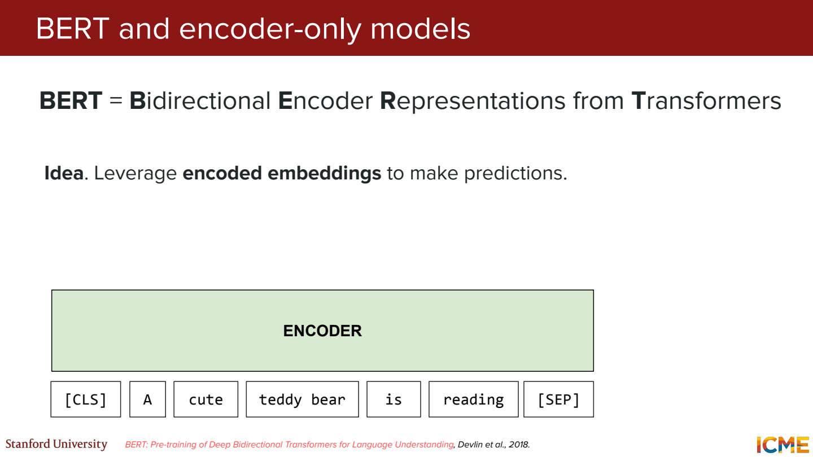
Encoder-only는 입력 전체를 읽고 각 위치의 표현을 만드는 데 사용.
예를 들어 이 영화 정말 좋다를 읽고 긍정인지 분류하려면, 뒤의 단어까지 같이 보는 게 자연스러움.
BERT에서는 [CLS] 위치의 표현에 분류기를 붙이는 식으로 사용할 수 있음.
Decoder-only는 앞에 주어진 토큰으로 다음 토큰을 예측.
이 영화 정말까지 보고 좋다를 생성하는 상황.
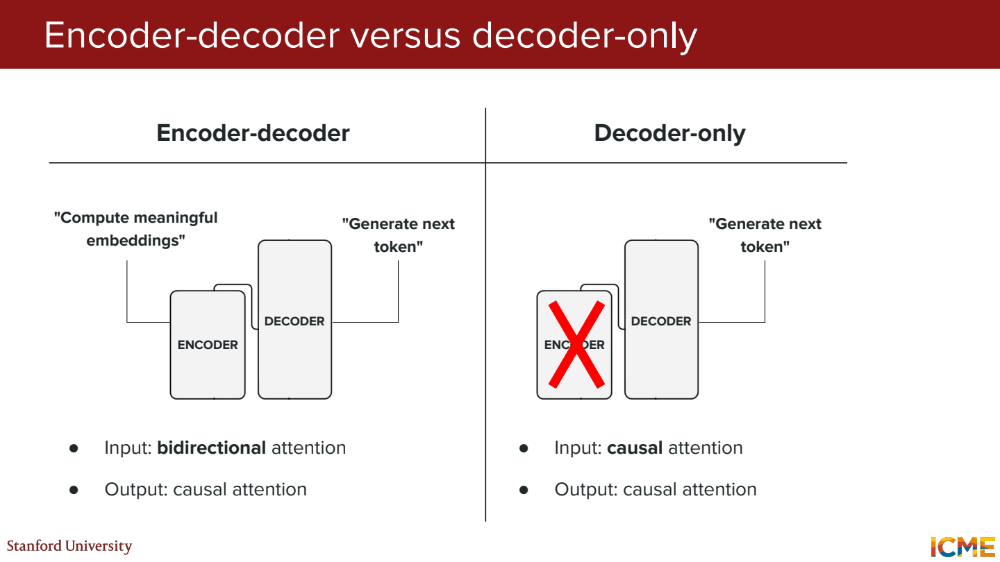
그럼 Encoder–Decoder는?
번역처럼 입력과 출력의 역할을 나눔. Encoder가 원문을 읽고, Decoder가 원문의 표현과 지금까지 만든 번역을 참고. 어떤 구조가 무조건 우월하다기보다, 입력 전체를 이해할지 다음 토큰을 생성할지부터 보기.
BERT는 무엇을 맞히면서 배우는지
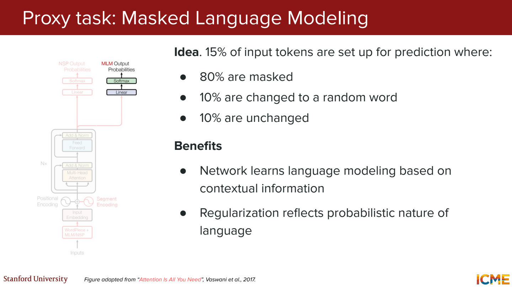
민수는 [MASK] 먹었다에서 가려진 토큰을 맞히는 Masked Language Modeling.
오른쪽의 먹었다도 참고 가능. 다음 토큰 예측의 causal mask와 다른 설정.
원래 BERT는 토큰의 15%를 예측 대상으로 선택. 선택된 것 중 80%는 MASK, 10%는 임의 토큰, 10%는 원래 토큰을 유지. 예를 들어 200개 중 30개를 고르면 24개 MASK, 3개 임의 변경, 3개 유지.
그럼 그대로 둔 토큰도 맞히게 하는 이유는?
모델이 MASK 표시가 있을 때만 작동하는 방식으로 치우치지 않게 하는 취지. 실제 입력에는 보통 MASK가 없기 때문. 원래 BERT의 Next Sentence Prediction은 두 문장이 이어지는지도 구분하는 별도 과제.
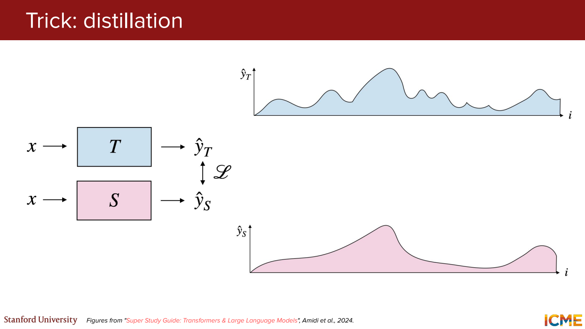
Distillation은 큰 모델의 정보를 작은 모델로 옮기는 방법.
정답이 ‘개’라는 정보와 [개 0.7, 늑대 0.2, 자동차 0.1]이라는 분포는 다름.
뒤의 분포에는 어떤 오답이 상대적으로 비슷한지도 담겨 있음.
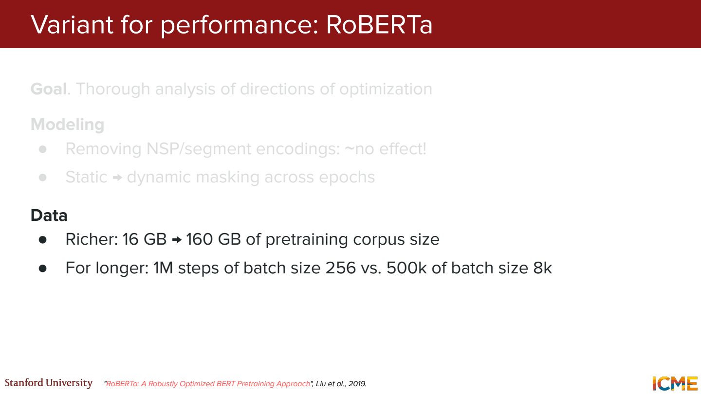
RoBERTa는 BERT 계열을 더 많은 데이터와 조정된 학습 방식으로 학습. NSP 제거, 동적 마스킹 같은 변화가 있음. 구조만 바꾸는 것이 아니라 학습 설정을 바꾸는 것도 성능에 영향을 준다는 예시.
모델 크기와 데이터 양을 같이 보기
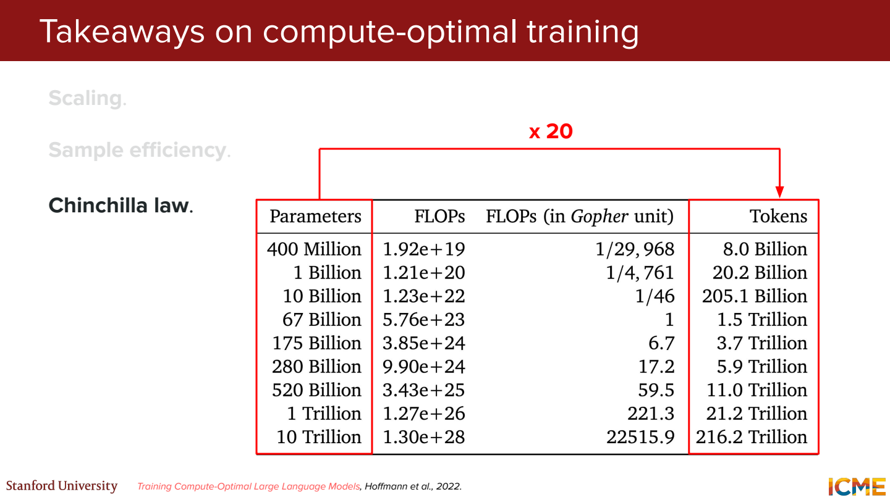
모델을 키우면 저장하고 학습할 파라미터가 늘어남.
데이터를 늘리면 더 많은 토큰을 처리해야 함.
Dense Transformer 학습 계산량을 거칠게 C ≈ 6ND로 보는 경우가 있음.
N은 파라미터 수, D는 학습 토큰 수.
그럼 둘 다 2배로 키우면?
이 근사에서는 계산량이 4배. 예산이 정해져 있으면 모델 크기와 데이터 양을 나눠 배정해야 한다는 뜻. Chinchilla의 ‘파라미터당 약 20토큰’도 특정 실험 설정의 계산 최적 배분 결과로 읽기. 모든 모델이 반드시 따라야 하는 고정 비율은 아님.
MoE는 여러 FFN 중 일부를 선택
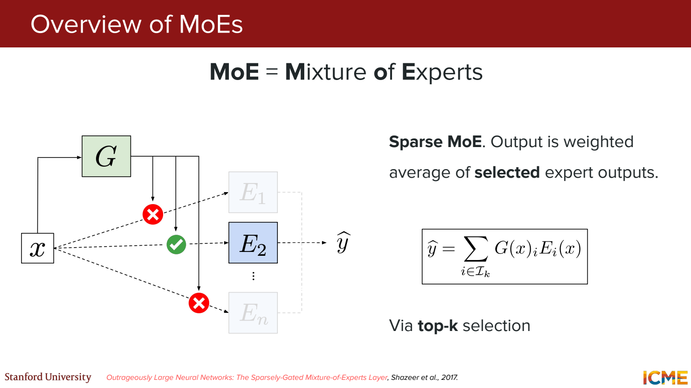
Expert를 여러 개 두고 router가 토큰마다 사용할 expert를 고름. Transformer에서는 FFN 부분을 이런 구조로 바꾸는 경우가 많음.
Expert 4개에 대한 점수가 [0.1, 0.6, 0.2, 0.1]이고 top-2를 고른다면 2번과 3번.
선택된 점수를 다시 정규화하는 설정에서는 0.75×E2(x) + 0.25×E3(x).
그럼 파라미터가 4배면 계산도 4배인가?
전체 expert를 저장해야 하므로 메모리는 필요하지만, 토큰마다 모두 실행하지는 않음. 전체 파라미터 수와 활성 파라미터 수를 구분해야 함. Attention과 통신 같은 비용도 있으니 전체 실행 시간이 단순히 expert 비율대로 줄지는 않음.
같은 expert만 계속 선택되는 routing collapse도 문제. 선택되지 않는 expert는 학습 기회가 줄고 일부 장치에 부하가 몰림. ‘전문가’라는 이름이 붙어도 처음부터 수학 담당, 문법 담당으로 지정하는 건 아님.
위치 정보를 점수에 넣거나 회전으로 넣기
기본 위치 임베딩은 입력 벡터에 위치 정보를 더함. 다른 방법은 두 위치 사이의 거리를 attention 계산에 직접 반영.
ALiBi는 거리에 따른 선형 bias를 점수에 더함. 기울기 0.2라고 가정하면 거리 1에는 -0.2, 거리 5에는 -1.0 같은 식. 원래 QK 점수도 함께 있으므로 가까운 토큰이 항상 이기는 것은 아님.
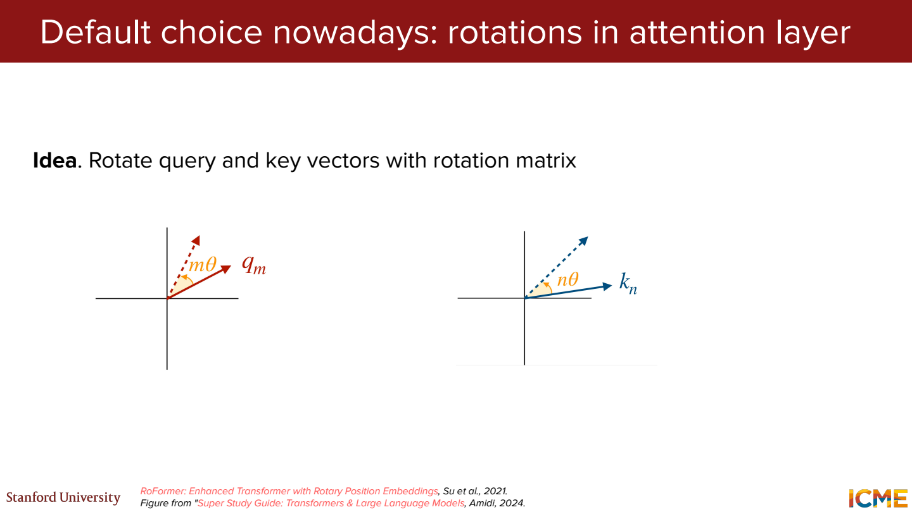
RoPE는 위치에 따라 Q와 K를 회전.
2차원에서는 [1, 0]을 90도 돌리면 [0, 1].
두 벡터에 적용한 회전 각도의 차이가 내적에 들어감.
그럼 위치가 전부 10칸씩 밀리면?
같은 회전 규칙 아래에서는 두 위치의 차이가 유지됨. Q와 K의 내적에 상대 위치를 반영할 수 있는 이유. 실제로는 여러 2차원 쌍에 서로 다른 회전 속도를 사용. 이 구조만으로 학습보다 훨씬 긴 문장에서도 정확하다는 보장은 없음.
전부 비교하거나 전부 따로 저장해야 할까
Sliding window attention은 가까운 일정 범위만 참고. 토큰 1,000개에서 각 위치가 약 100개를 보면, 전부 비교할 때보다 점수 계산을 줄일 수 있음. 멀리 떨어진 정보는 여러 층을 거쳐 전달하거나 global attention 같은 통로가 필요.
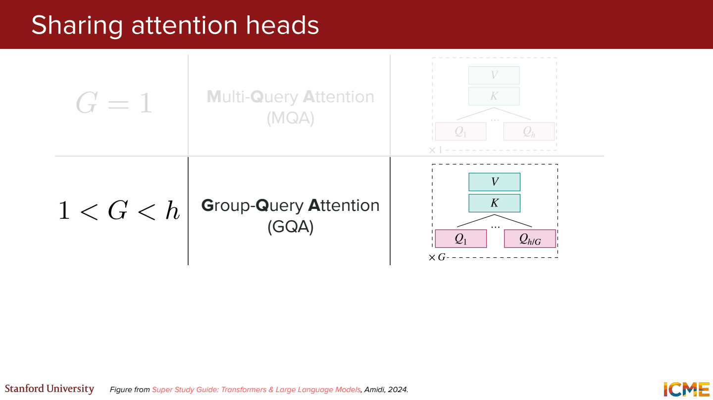
MHA는 Q head마다 별도의 K, V head를 둠. GQA는 Q head 여러 개가 K, V head를 공유. MQA는 K, V head가 각각 하나.
Q head 8개를 유지하고 KV head를 8개에서 2개로 줄이면?
head 차원과 토큰 수가 같을 때 KV 저장량은 1/4. Q가 찾는 방식은 여러 개 유지하면서 저장할 K, V를 줄이는 것. 전체 모델 메모리가 1/4이 되는 것은 아님.
정규화 위치와 RMSNorm
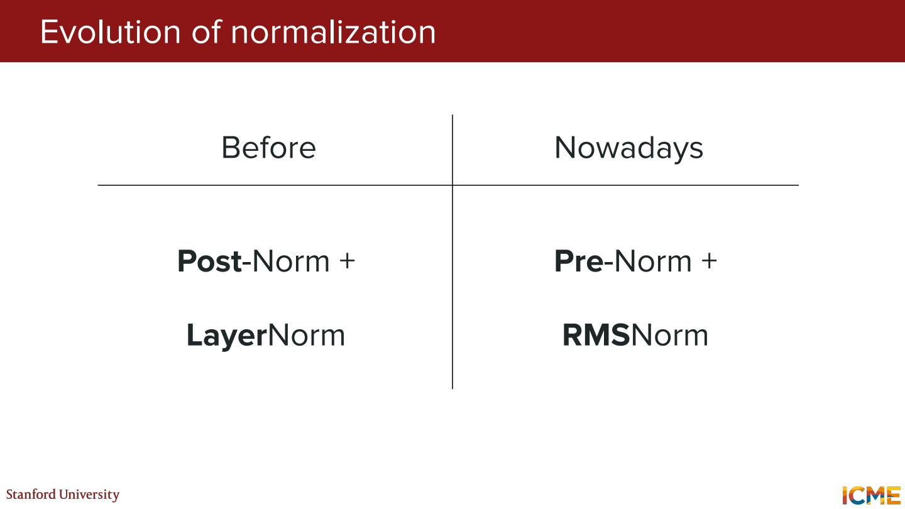
Post-Norm은 Norm(x + F(x)).
Pre-Norm은 x + F(Norm(x)).
같은 모듈이라도 residual 경로와 정규화 순서가 달라짐.
LayerNorm은 평균을 빼고 분산으로 크기를 조절. RMSNorm은 평균을 빼는 단계를 생략하고 제곱평균의 제곱근으로 나눔.
[1, 3]의 RMS는 sqrt((1²+3²)/2) = sqrt(5).
학습되는 scale과 epsilon을 빼고 보면 약 [0.447, 1.342].
평균이 0이 되도록 만드는 계산은 아니라는 점.
다음 토큰은 확률에서 고르는 단계
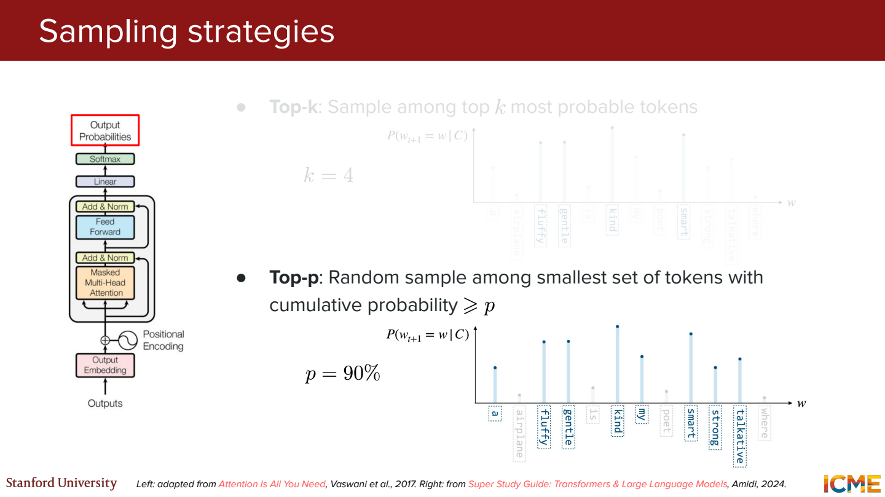
후보 확률이 [0.5, 0.3, 0.15, 0.05]라면,
- Greedy → 항상 첫 후보
- Top-k에서 k=2 → 앞의 두 후보를 남기고
[0.625, 0.375]로 다시 정규화 - Top-p에서 p=0.8 → 누적 확률이 0.8에 도달하는 앞의 두 후보를 남김
Top-p는 남기는 개수가 고정되어 있지 않음. 한 후보가 0.9라면 p=0.8에서 그 후보 하나만 남을 수도 있음.
Temperature는 softmax 전에 logits를 T로 나누는 값. 작게 하면 높은 점수에 더 몰리고, 크게 하면 분포가 완만해짐. 낮춘다고 사실 확인 능력 자체가 생기는 것은 아님.
JSON 같은 형식은 허용되는 다음 토큰을 제한하는 guided decoding으로 맞출 수 있음. 문법적으로 맞는 JSON 안에 틀린 사실이 들어갈 수는 있음.
예시를 보여주는 것과 가중치를 학습하는 것
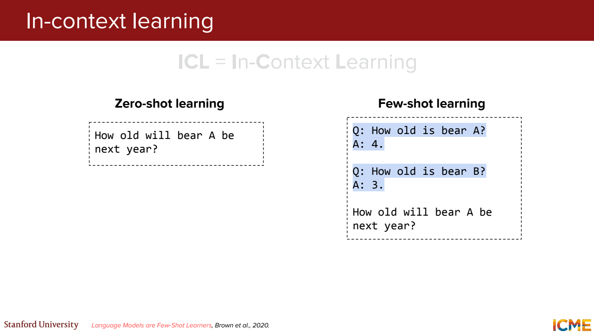
좋아요 → 긍정, 별로예요 → 부정을 프롬프트에 넣고 새 문장을 분류하게 하는 것이 few-shot 예시.
이때는 입력 문맥을 활용하는 것이고 모델 가중치를 다시 업데이트하는 것은 아님.
추론 단계를 쓰게 하는 CoT, 여러 번 생성한 답을 모으는 self-consistency도 있음.
예를 들어 답이 5, 5, 4라면 다수결로 5를 선택.
하지만 셋이 같은 잘못된 전제를 공유하면 다수결도 틀릴 수 있음.